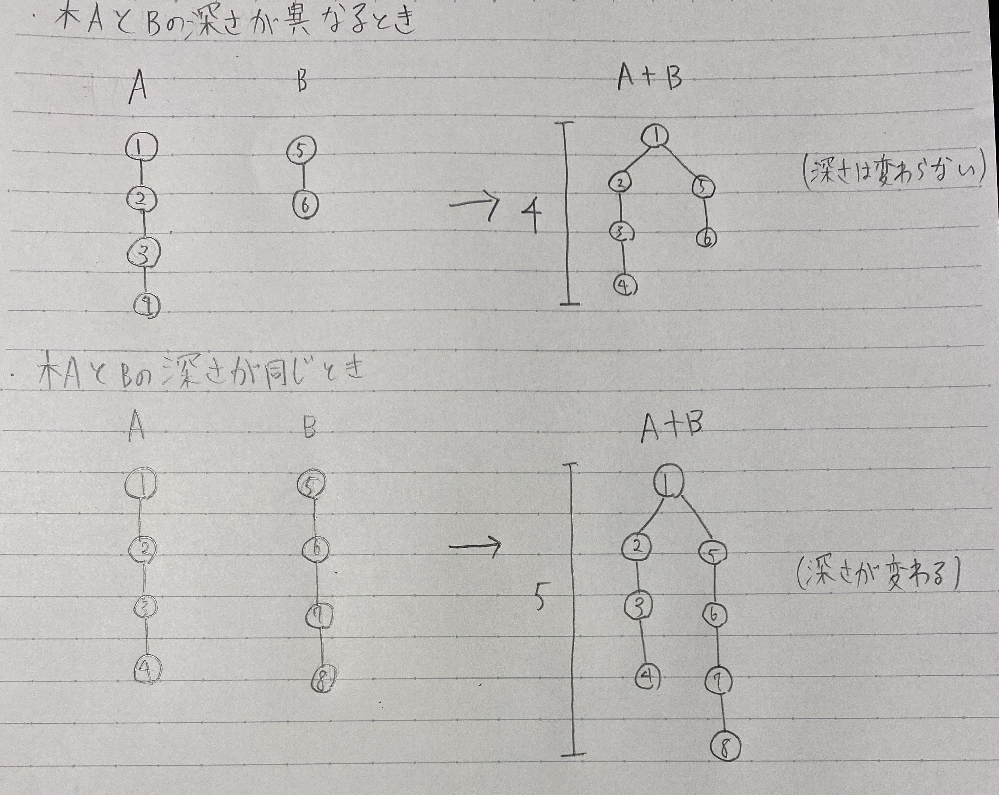

蟻本のUnion-Find木(p.84)の併合をする関数を見ると、下のような実装になっている。
//xとyの属する集合を併合
void unite(int x, int y) {
x = find(x);
y = find(y);
if(x == y) return;
if(rank[x] < rank[y]) {
par[x] = y;
}else{
per[y] = x;
if(rank[x] == rank[y]) rank[x]++;
}
}
「 if(rank[x] == rank[y]) rank[x]++; 」
この部分について、最初はなぜ併合する2つの木が同じ長さの時だけ併合後の木の長さを+1しなければいけないけないんだ...? と思っていたが、図示してみるととても分かりやすかった。(教えてくれた方、ありがとうございます。)
上の図のように、Union-Find木は深い木の方の根に深くない方の木の根をつけることで、併合後の木の深さの増加を抑えている(図の上部分)。
しかし、2つの木の深さが同じ場合、根っこの分深さが1増えてしまう(図の下部分)。この部分が、「 if(rank[x] == rank[y]) rank[x]++; 」なのである。(逆に、これ以外で深さが増えることはない。)